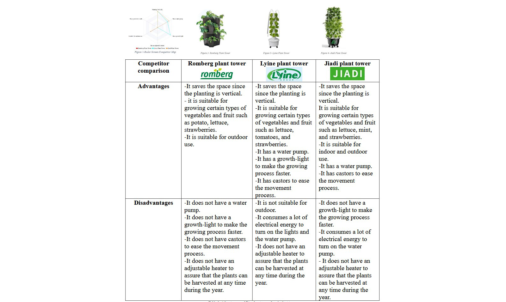
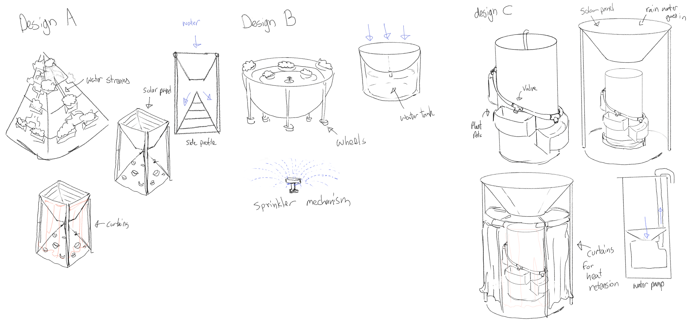
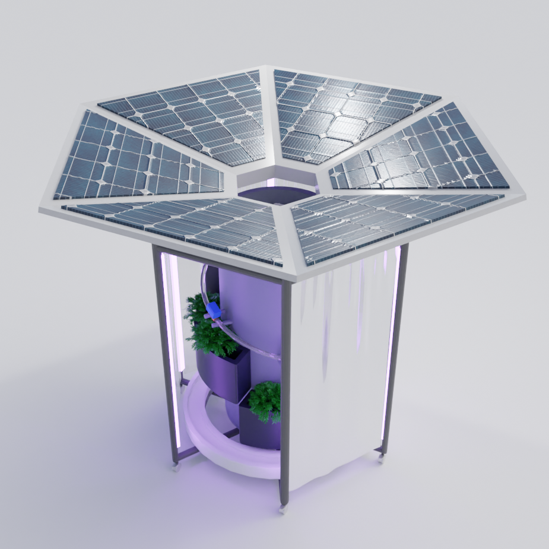
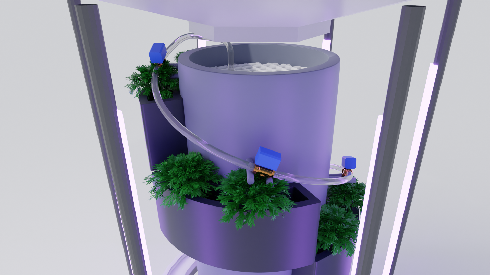
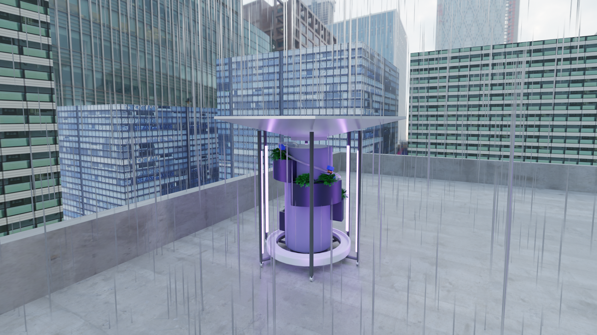

This project focused on the design and financial breakdown of a plant tower designed to use solar panels to generate energy used to automate plant growth sustainably, inspired by agrivoltaics. The design aims to tackle SDG 11: Sustainable cities and communities and SDG 7: Affordable and clean energy. The solar panels are angled inwards into the centre of the tower, which acts as a funnel for collecting rainwater. This water can then be pumped around the design and dispersed to the attached plants with the use of a water pump. The designs semi-portable nature means several of these towers can be used together for optimum efficiency.
Initial planning began with comparing current products on the market with the use of a table outlining the main advantages and disadvantages of competitors to analyse potential gaps in the market. It was found that most towers on the market do not provide a method of energy generation through solar panels, or do not have a water pump.
After a full analysis was made, different design sketches were made to try and best capture the current gap in the market.
A comparison between these sketches found Design C to be the most intuitive. This model was created by combining the vertical structure of Design A and the use of solar panels, and the water collection system of Design B.
Since solar panels are usually created on a flat surface, the panels are organized in a hexagonal shape to emulate the funnel design. A water pump spirals across the core of the tower, which can disperse water to plant pots situated on the tower. If a heater is needed to keep plants at an optimum temperature, plastic curtains can also be used to insulate heat. This final design also uses wheels on the base for ease of transport.
Valves connected to the water pump can be controlled using an arduino system, which can automatically water plants at any given time.
Below is a list of all the components the final design tries to implement:
1. Cylindrical-shaped reservoir: It is located at the centre of the plant tower and is holed in the middle to allow for the rainwater to be collected inside. Given situations where there is no rainwater, water can also be manually added to the reservoir from the top of the tower.
2. Filter (Sieve): It is located at the top of water reservoir, and it denies the debris from entering the reservoir to assure that clean water is delivered to the plants.
3. Water pump: It is located at the bottom of the tower and its job is to push the water back up.
4. Spiral-shaped pipes: In which the push backed water go through and it includes on electronic valves connected to the moisture sensors. These valves evenly supply water to the individual pots at all heights.
5. Roof with solar panels: It is located at the top of the tower and provided with solar panels that provide the system with the necessary power to make it works.
6. Rechargeable lithium-ion battery using M-Bric technology: It is charged by the solar panels at the roof, and it stays from 1 to 3 days on a single charge.
7. LEDs for lighting: It is located vertically along the sides of the tower and opposite to the plants to provide them with the necessary lighting to make their growth process faster.
8. Heater: It is connected to the temperature sensors, and it provides the plants with the required temperature to guarantee a successful planting.
9. Resistive Soil moisture sensors: they are used to measure moisture within the soil of each plant. When needed, the specific valve for the plant pot will open and the water pump will activate for a long enough time to hydrate the plant. The moisture in each plant pot is periodically checked to see whether it needs to be watered or not.
10. Temperature sensors: they are a type of thermostat used to keep an adequate temperature. They are responsible for monitoring the temperature all the time and adjust it adequately.
11. Arduino IDE: It works collaboratively with the soil moisture sensors and temperature sensors for a perfectly automated system.
12. Castors: Whereby the whole system is located on them to make it free rolling to get as maximum sunlight exposure and it can be locked anytime to assure that the tower is stable. Note that all wiring must be waterproofed, loose cables can be wrapped around the main spiral shape the water goes through.
Below is a list of all the features the final design tries to implement:
1. It has a self-watering system that is controlled by the soil moisture sensors which reduces results in reducing the issues of over or under-watering.
2. Naturally collects rainwater which is fed back into the system to automatically water the plants.
3. It has a self-monitoring heating system controlled by the temperature sensors.
4. It depends on the solar power which is considered as a sustainable renewable energy.
5. It is an eco-friendly design since it has zero harmful emissions released into the air.
6. It has a lighting system to speed up the growth process of the plants.
7. It does not consume too much water because of its vertical structure whereby it consumes 99% less water than traditional farming.
8. The plant tower excels in its high durability since the majority of its materials are stainless steel which is an extremely tough metal with high impact resistance.
9. To allow for a wider range of crops and vegetables, the plant pots can also be swapped out to varied sizes but limited to not exceed the dimension of the solar panels. This prevents breakdown of the entire tower and helps to evenly distribute weight balance overall throughout the tower.